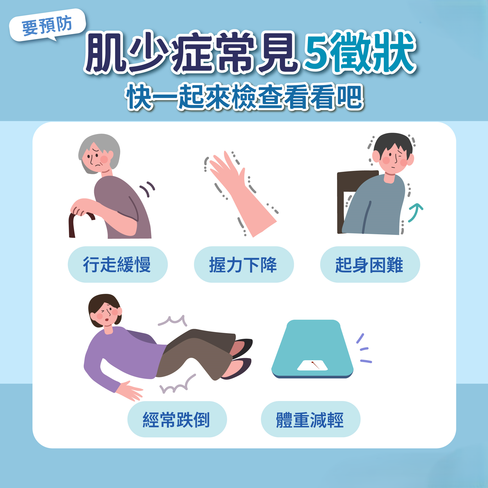
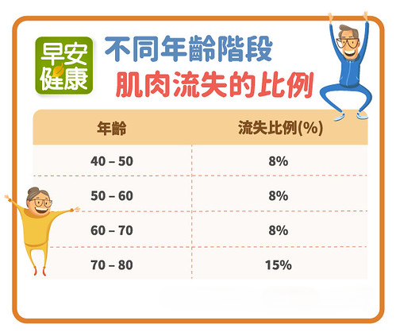
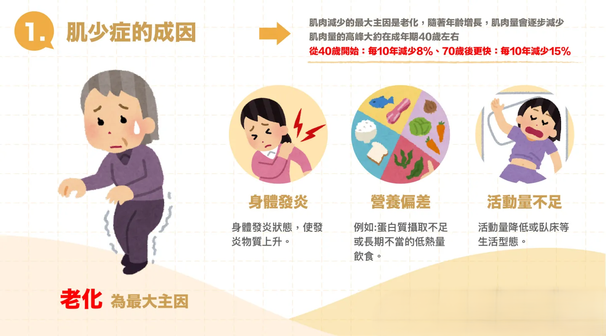
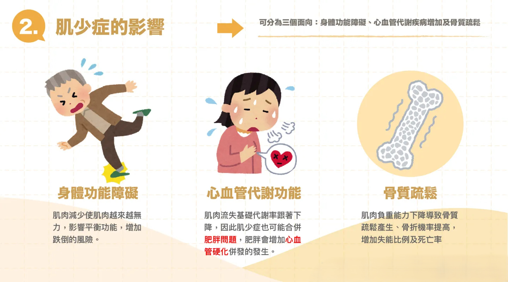

肌少症與肌力健康知識專區
了解警訊、成因與預防策略，從生活中守護您的肌力
1. 什麼是肌少症？
肌少症是指隨著年齡增加，肌肉量、肌力與肌肉功能逐漸下降的狀況。一般從 50 歲之後就會開始出現肌肉量流失，若沒有透過運動與飲食補充，就可能導致活動力下降、跌倒風險增加，影響生活品質。
常見症狀
2. 肌少症常見症狀
身體表現
- 肌肉量明顯變少（腿變細、手臂瘦弱）
- 走路變慢、容易累
- 握力變小、開瓶蓋困難
- 站起來或爬樓梯變吃力
- 動作變慢、容易跌倒
生活狀況
- 提重物變得困難
- 無法獨力完成某些日常活動
- 容易疲倦、沒精神
- 活動量降低 → 肌肉變得更少

肌肉流失速度
3. 肌肉流失的速度
- 30 歲後每 10 年約流失 3–8% 的肌肉
- 60 歲後速度攀升，若沒有運動，可能更快
- 肌肉流失也會讓行走、平衡、反應變慢

好發族群
4. 好發族群
- 65 歲以上長者：自然老化導致肌肉快速流失
- 久坐不運動者：不活動肌肉不使用就流失
- 慢性疾病患者（糖尿病、腎臟病等）
- 癌症患者或住院／臥床者：長期無活動和營養不足
- 飲食營養不足者：特別是蛋白質攝取不夠

可能併發症
5. 可能併發症 / 影響
- 跌倒與骨折風險增加
- 生活功能退化（洗澡、穿衣、走路變困難）
- 提早失能、需要照護
- 住院時間變長、恢復變慢
- 增加死亡風險（尤其合併慢性病）

警示：肌少症不是單純「變瘦」或「沒力氣」而已，它會影響整個晚年的生活品質。若有疑慮，建議向醫療或復健專業人員諮詢。